Featured
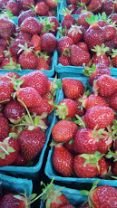
Seasonal Recipes
Recipes from La Rhonda's kitchen, organized by season -- pick one to see what's cooking.
Explore the recipes
Recipes from La Rhonda's kitchen, organized by season -- pick one to see what's cooking.
Explore the recipesNew posts coming for the summer months. See you soon.
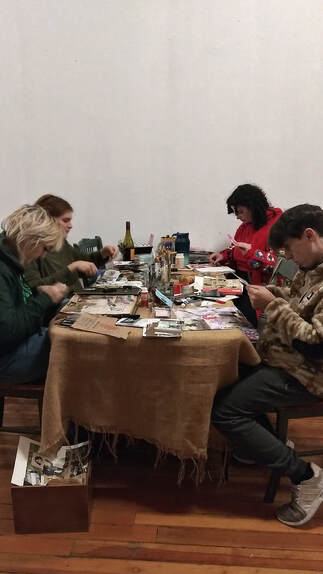
The October Road begins at Interwoven, opening it's doors more frequently in the cooler weather, we are launching new workshops all month led my an array of Artists thoughout the creative community.
Interwoven's "Game Unplugged" with music on a Monday night featuring local musicians and board games, hence the "unplugged" version of things, is beginning to wrap up for the 2022 season.
Be sure to check out Roots Run Wild on October 19th! There will be a brief hiatus in November and then back in December and we are done.
Check out what's going on the first Tuesday of each month on our new calendar.
Gwen LeBlanc and Amber Vaughn join the core group of Artists at Interwoven teaching various ways to collage with fabric and what Amber describes as "garbage" but Gwen and I like to call it re-purposed, or re-claimed goods. You will find many personalites, identities, as well as skills during our events. So if you need something to do, or would like a change of pace, discover the local creatives that make music, fabric, craft and interesting conversation! This is Interwoven — a venue created by an Artist for Artists with more events on the way.
This is where the story gets told.
If you have an idea for a workshop or event, email Rhonda at interwovenmakerspace@gmail.com.
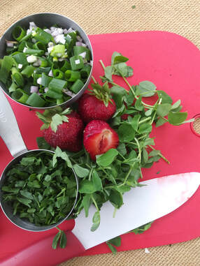
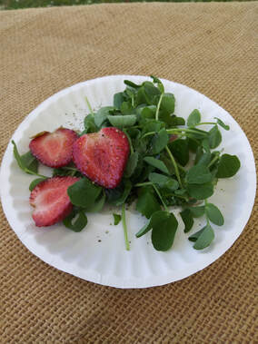
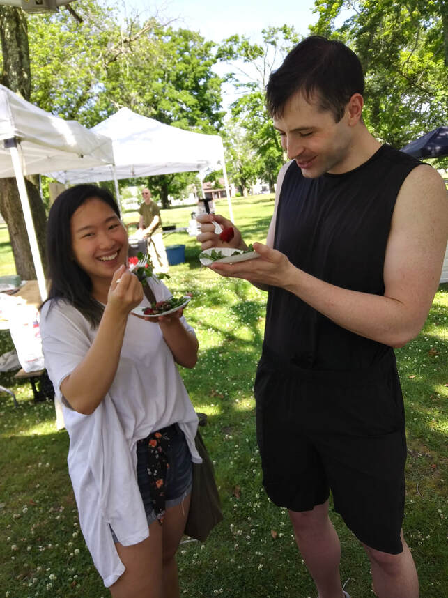
Did you know that strawberries are social plants? They require a male and female plant to produce the fruit which is in fact, an ovary covered in seeds…hmm. Sweet, succulent, juicy, red berries. They are the perfect fruit for Pride month. The strawberry is steeped in sexual orientation.
I am not joking. This is real. Read the article for yourself here. For more details in the scientific realm of the strawberry's sexuality you can read the original article here.
All this talk of strawberries and sexuality makes me want to watch the movie "Chocolat" with Juliet Binoche. Truth be known, in the spirit of Pride month, she is the only woman I would jump the fence for…wait, there is also Lena Olin in "The Unbearable Lightness of Being." Both women were in both films. I highly reccomend that you indulge yourself by watching these two beauties own the screen with their spectacular performances. And I double dare you not to fall in love with them. I've said enough on the subject, but there is this really great scene when Lena Olin's character is eating fondue…watch it! Good films, good books of cinematic and literary excellence.
Back to strawberries… if you would like to learn how to make delicious food with strawberries and their plant friends, then come visit me at the New Bedford Farmers Markets where I perform cooking demos and teach "The Art and Language of Food". I cook what is in season and readily available at each market and mobile food stand throughout the city. Check out My Maps to see where I will be each week from June through October. Follow environmental alchemy on Instagram where I post the images of what I make each week. Come on over for a visit and taste what is fresh at the market and learn some healthful tips as I highlight my "SNAP to the MAX" philosophy:
"Use what you have and learn how to make the most of it."
See you soon.
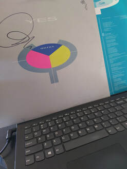
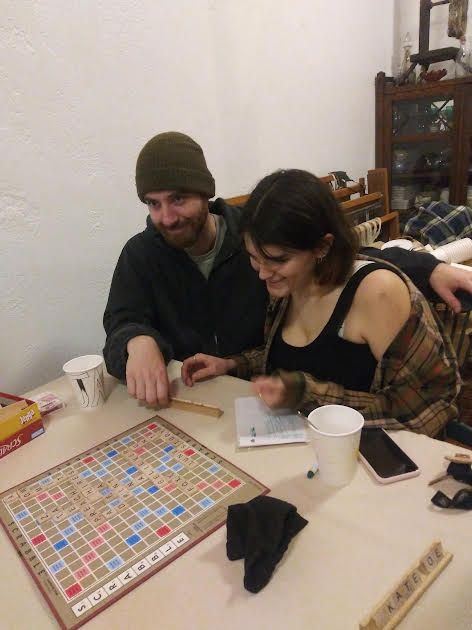
I love song lyrics that reference a move on a chess board. "Your Move" by YES, is one of those great, now classic tunes that I never get tired of hearing. It has everything I love in a vinyl recording: instruments, clear sound without any technology, loaded lyrics that tell a story within the story and let's not forget the magnificent art work of an album cover, back in the day this was the access to art that my young eyes adored.
I would spend hours looking at some of them, laying on the floor, hands under my chin, seeing the little things without glasses… and then the song explodes into the rock and roll stratosphere, lifting you up and out of this world. That's the magic of a well made album.
Yes! to listening to the entire compilation of songs. This is the art of compostion in sounds. Listening to one song is like tearing a page from a book, it becomes isolated from the rest of the story. This is what is lost in today's digital discography of downloads. Besides, you cannot get your albums signed by recording Artists who wander into your studio before the show starts at the Narrows Center for the Arts to buy gifts for their wives…or themselves.
If you love board games and music as much as I do, then I invite you to "Game Unplugged with Music on a Monday Night" at Interwoven. Thanks to a grant from the New Bedford Cultural Council there is a budget for musicians, new and seasoned, who would like to jam out for a couple of hours while we play our games "unplugged."
On quiet Monday nights in downtown,
Turn off, Take a seat, and Let's play.
First Mondays of each month, unless otherwise noted, for however long the funds last.
July 4th (closed) & 18th — musical guest — tbd
August 1st & 15th — musical guest tbd
September
October
Learn to Play 6-7 Live Music 7-9 Limit Time 10ish
Coffee, tea and goodies will be available. Donations only. This is an alcohol free event. Space is limited.
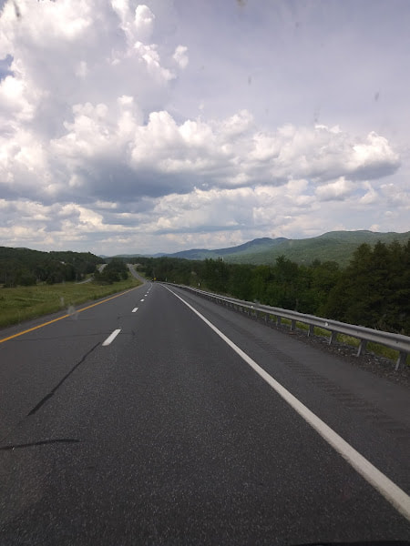
James Taylor's lyrical journey nearest and dearest to my heart, the "Highway Song," speaks of the road and a longing for the soul to ramble. A place of solitude in motion, to think, to reflect, to form new ideas or resurrect old ones. The road is a place that brings tremendous joy and creativity into the heart of me. After a grueling two years of limitations that were killing my soul slowly (who else is with me on this one?), not to mention several health scares that had almost killed me for real, it becomes a safe space where I put myself back together with a renewed spirit for life, time after time. It is the place where I spritually survive and thrive.
Thanks to the many Local Cultural Councils throughout the Commonwealth with the support of the Massachusetts Cultural Council, Dyer Maker Studio® will be "back on the road again" this spring and summer. “Dyeing to Wear It: Creating Community with Color” will partner with libraries all around the Commonwealth. Follow my social media pages as I prepare to journey around this beautiful state of Massachusetts, along with a dip into the neighboring state of New Hampshire, with more announcements and more places to come, just there, on the "blue horizon"…
And where there is light, there is color and hand crafted gifts you can make yourself! Sign up for my "Dyeing to Wear It"™ class, The Art of the Gift, click on the Book now button and choose the date.
On Saturday, December 18th 10-2, I will be decorating cookies with the New Bedford Farmers Market at Buttonwood Park Zoo. Bring your kids/grandkids — special treats if you come dressed as an elf!
In my world, all color is beautiful so how can it not be renewed — It's my birthday month! The quote comes from a song by Sarah Brasko and is such a well written lyric, filled with life and strength. Like the city of New Bedford.
It's a hectic time of year to be sure but take time for a stroll downtown, so much is happening. Interwoven will be open for small business Saturday on the 27th. Click on the "BOOK NOW" button and follow the prompts, to sign up for "Dyeing to Wear It" — coming in December. I will post pop up musical performances on my social media pages.
Interwoven will have a booth at the Buzzard's Bay Brewery Holiday Stroll event.
La Rhonda is cooking up the freshest, sweetest, and the most savory dishes from ingredients found at the New Bedford Farmer's Market each week at Buttonwood Park's Senior Center. Saturdays 10-2pm.
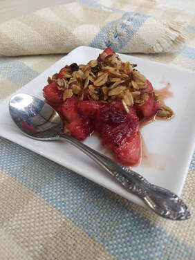
A sweet little portion of dessert with a set of my handwoven placemats and napkins. Interwoven offers classes in weaving and natural dye wearables.
Visit the gallery/makerspace to shop local. Gift certificates available for the Holidays and anytime of the year.
Contact me if you have any special requests. Private classes are available.
2-3 apples — I use the spotty kind for my jam and desserts — peeled and diced or sliced. I eat the pristine looking apples of course.
1 handful of cranberries
Generous pinches of cinnamon, nutmeg and cloves or to taste
Saute pan on medium heat
—melt 1 Tbs of butter, add fruit, saute for 2 minutes
—add 1/4-1/2 cup of water
—drizzle maple syrup to taste
—1 Tbs sugar is optional
Cook until the fruit is tender and the cranberries "bleed" their color. Cook down the liquid until it begins to create a bit of syrup. In a different pan, use the same ingredients (omit fruit and water) to toast the oats. Toast until light brown, adding the syrup just before it is done. Serve with whipped cream or a drizzle of farm fresh heavy cream. So good! The best part is that there isn't a big pan hanging around.
Just a serving or two. Simple and fresh. I enjoy the tart flavor however, sweeten more if desired.
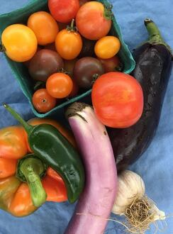
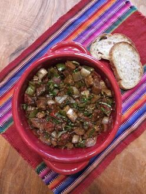
Cooking with La Rhonda, the South Coast Sicilian!
What do you do with the vegetable overload during havest season? More important than that — how do you cook eggplant? Let me show you how easy cooking can be as you watch me prepare simple and fresh foods at the New Bedford Farmer's Market and Coastal Foodshed pop-up markets ever week through September.
New Bedford Farmers Market at Brooklawn Park is each Monday (except Labor Day) 2-6. Cooking demo 2-4.
The Coastal Foodshed pop up market will be at Clasky Common every Friday from 2-6. Cooking demo is 2-4.

Walk in and Learn: An Introductory Demonstration to Canning...
August 30th, at DoCo restaraunt. Details in the link.
To register: fb.me/e/2wHwrniWi
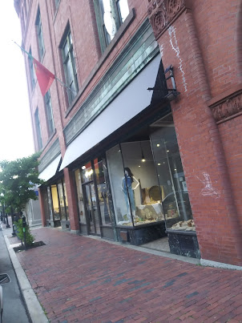
Where the street has a name...634 Pleasant Street! We will be open Friday August 6th from 5-8pm. Stop by and see what Interwoven is all about.